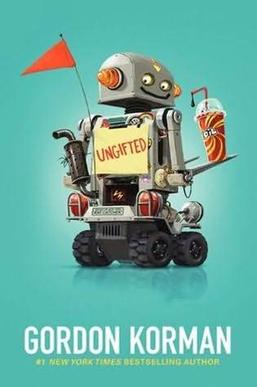

Summary
Ungifted is about a kid named Donovan Curtis who gets sent to a school for gifted students by accident. Donovan is a prankster who is trying to escape the principal after one of his pranks goes horribly wrong. Although he struggles with the advanced schoolwork, he discovers that he has other talents. He becomes the joystick driver for the robotics team and helps his new friends prepare for the state championship. After the mistake is discovered and Donovan is sent back to his old school, he secretly returns to help his team compete. His quick thinking and courage help them defeat a rival team and win the championship. I really liked this book because it showed that being smart isn't just measured by having a high IQ. Donovan showed that having “street smarts”, being brave, and knowing how to have fun are just as important. I especially enjoyed the part where the genius students and the troublemaker (Donovan) learn from one another. The book made me reflect on how everyone has different strengths and weaknesses. It reminded me that we should not judge people based on a single test score, because there are multiple ways to be intelligent.
What I Learned
A lot of people don’t have access to clean water, which is not healthy. When people don’t have many resources they make do by inventing their own ways to get what they need. For example, to cool a house without using an AC machine, people knit their own curtains.
My Rating
⭐⭐⭐⭐⭐
Favorite Quote
"Part of strategy is risk vs return. Why would I risk getting myself busted for cheating over a jerk I can't even stand?" I like this quote, because she did cheat by taking the test for him and it is the opposite thing of what she would do.(p.218).
← Back to My Library